Математика
Решаем задачи по разным темам, сравниваем способы решения и обсуждаем, где возникают трудности. Отрабатываем сложные для ребят темы и закрепляем основы математики.
Педагог дополнительного образования
Детский технопарк «Кванториум»
при МАОУ «Гимназия № 3» города Южно-Сахалинска
Ценю возможность помогать детям осваивать новое и видеть, как полученные знания превращаются в реальные результаты.

Моя профессиональная деятельность связана с математикой, программированием и современными цифровыми технологиями. Я убеждён, что образование должно не только давать знания, но и учить применять их на практике, самостоятельно находить решения и не бояться пробовать новое.
Современный мир стремительно развивается, и вместе с ним меняются подходы к обучению. Именно поэтому я стараюсь постоянно совершенствовать свои профессиональные навыки, изучать новые технологии и находить интересные способы их применения в образовательном процессе.
В своей работе придерживаюсь простого принципа: лучший способ чему-то научиться — попробовать сделать это самостоятельно. Мне важно, чтобы ребёнок не просто запоминал готовые решения, а понимал, как они устроены, умел рассуждать, экспериментировать и делать собственные выводы.
Главной наградой в своей работе считаю не оценки и формальные показатели, а искреннюю заинтересованность детей, их самостоятельные достижения и желание возвращаться на занятия, чтобы узнавать и создавать что-то новое.
«То, чему мы должны научиться делать, мы учимся, делая».
Решаем задачи по разным темам, сравниваем способы решения и обсуждаем, где возникают трудности. Отрабатываем сложные для ребят темы и закрепляем основы математики.
Осваиваем компьютер и теоретические основы информатики. Составляем алгоритмы, пишем программы и создаём мини-приложения на разных языках. Используем ИИ для разработки цифровых продуктов.
Моделируем объекты, собираем из них сцены и проверяем свои проекты в виртуальной реальности.
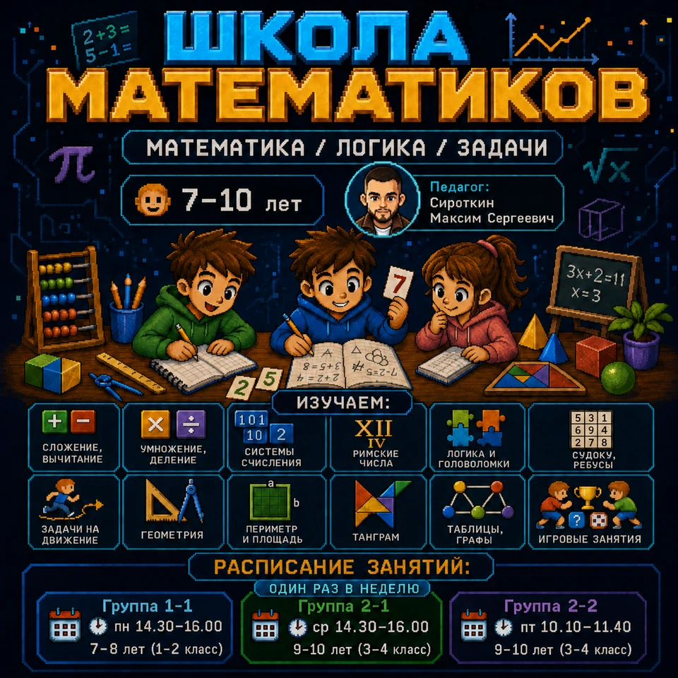
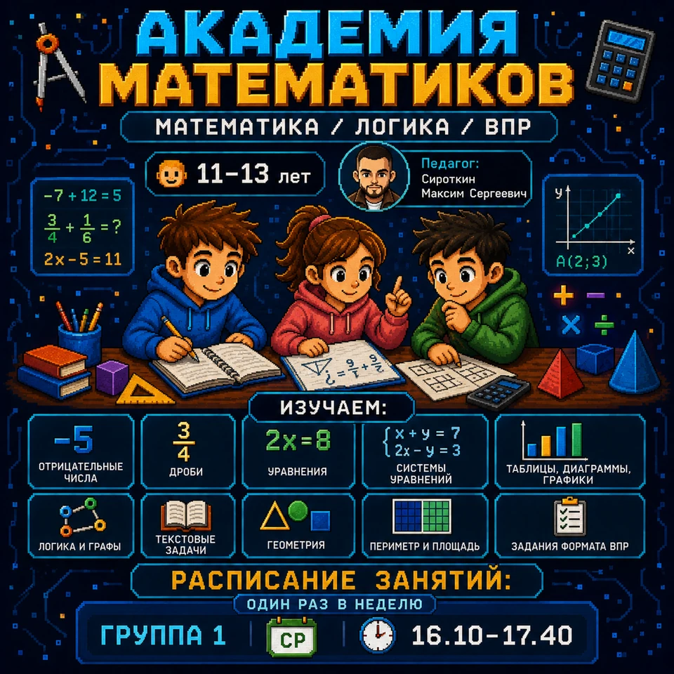
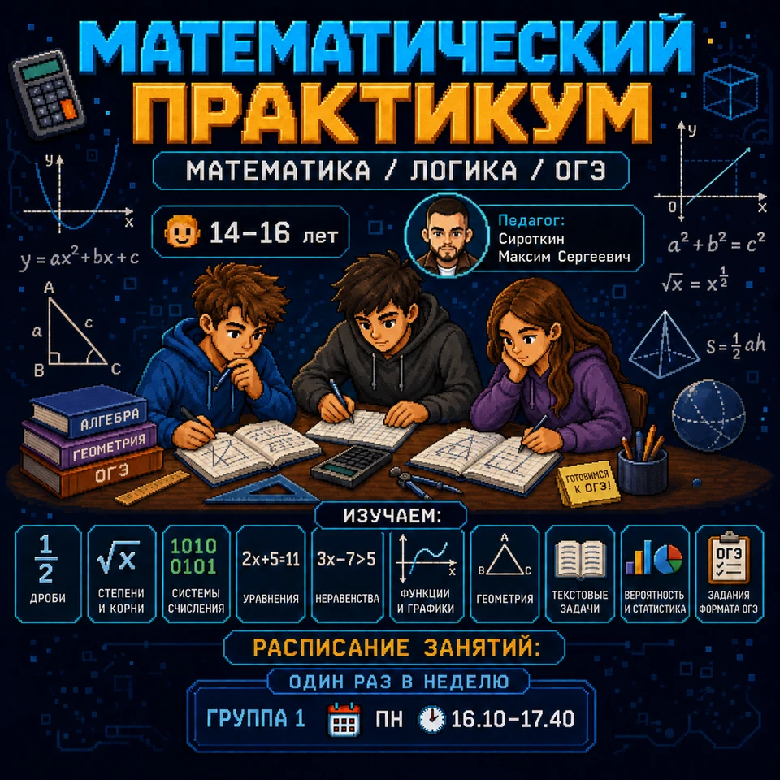
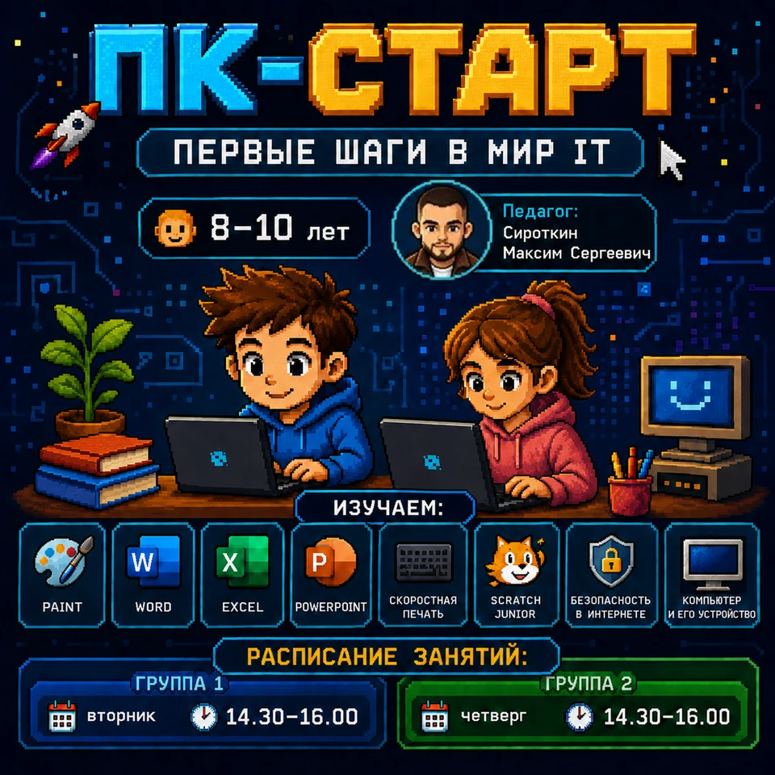
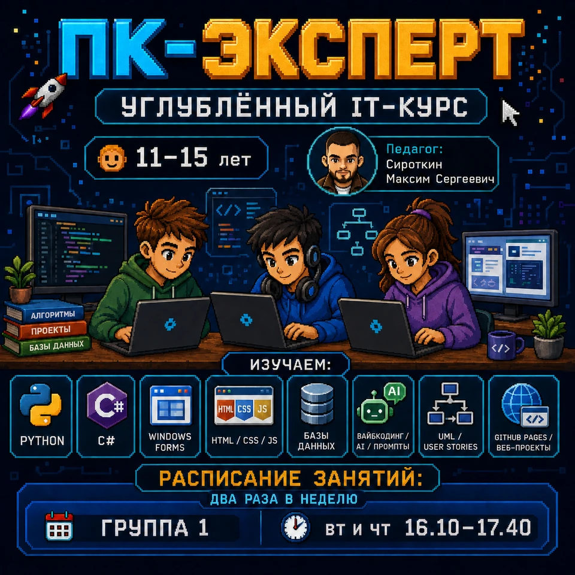
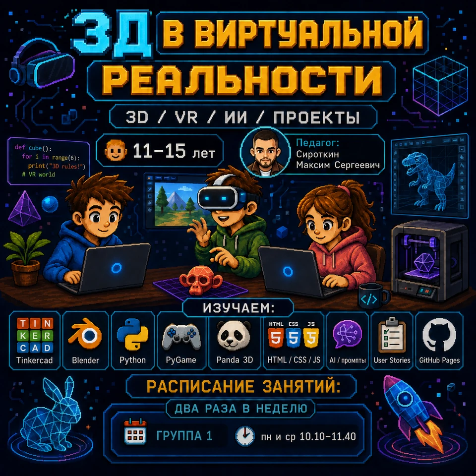
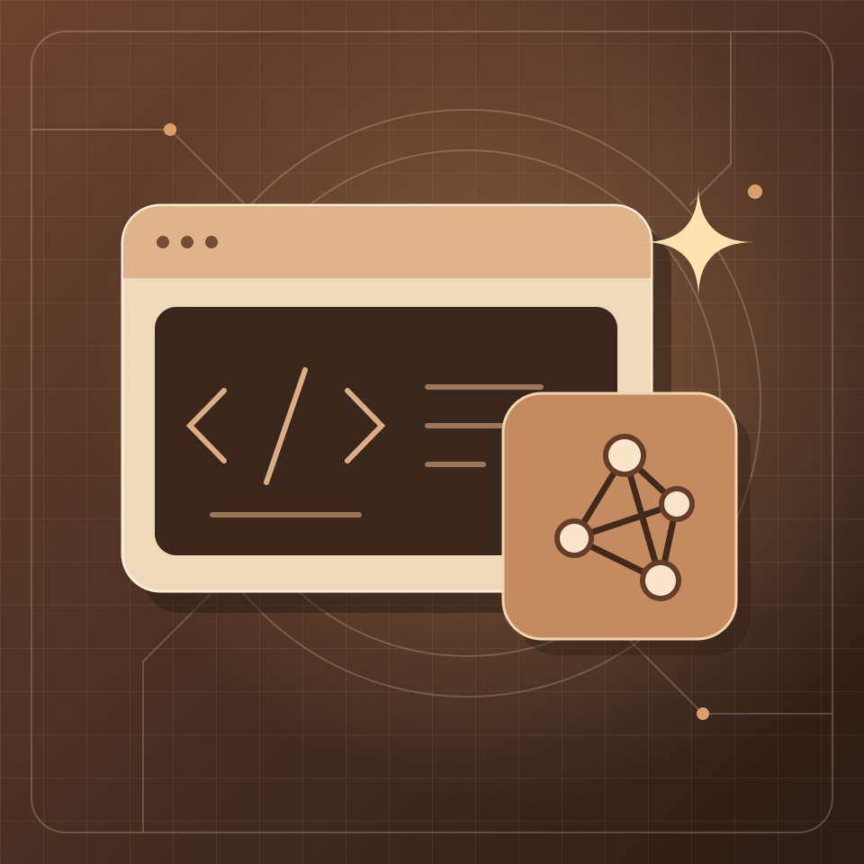
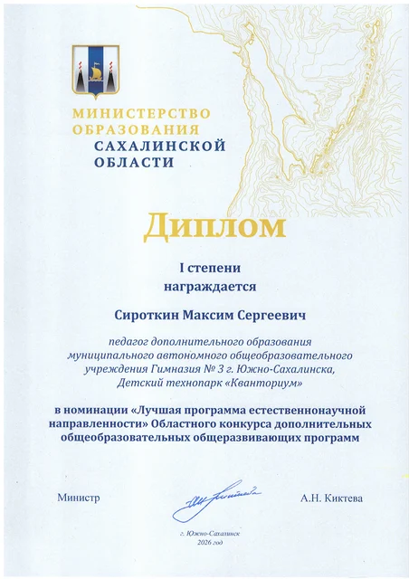
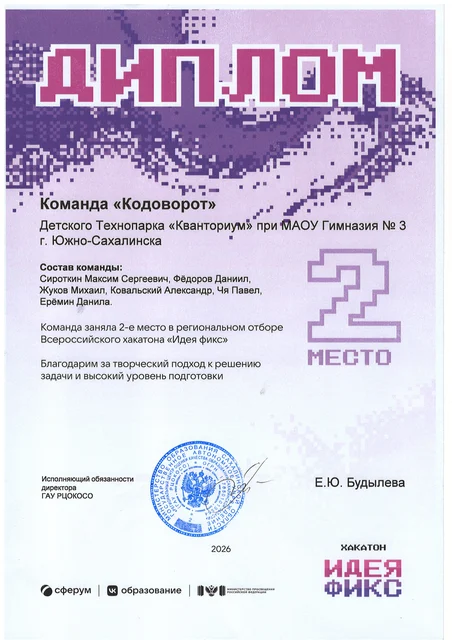
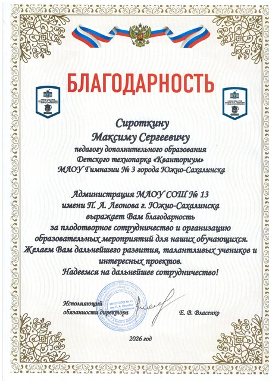
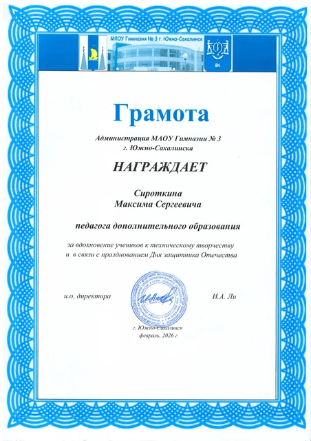
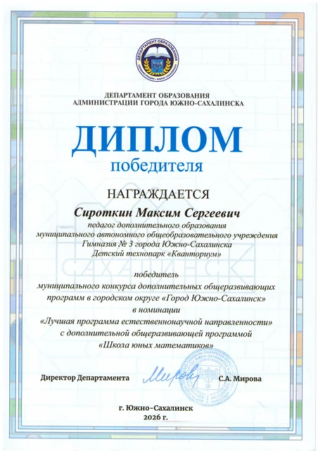
Исследую, как можно применять машинное обучение, пробую разные способы работы с ИИ и использую его в разработке цифровых продуктов.
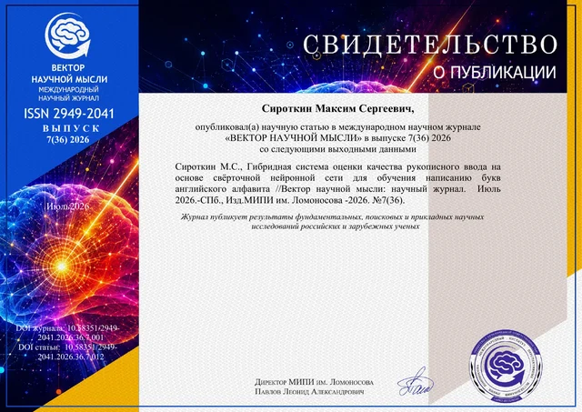
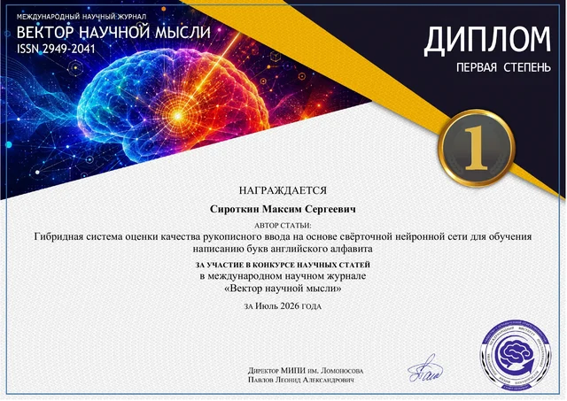
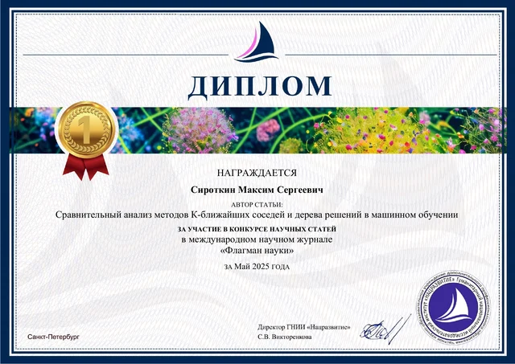
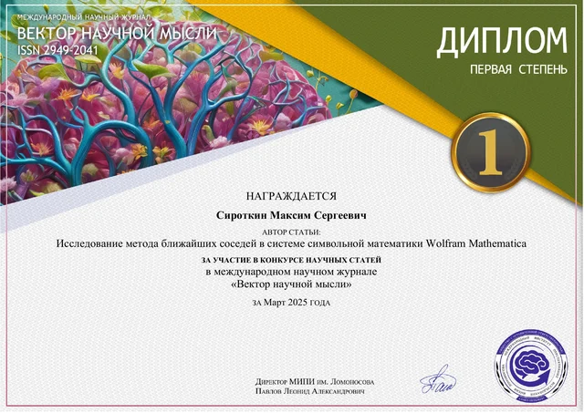
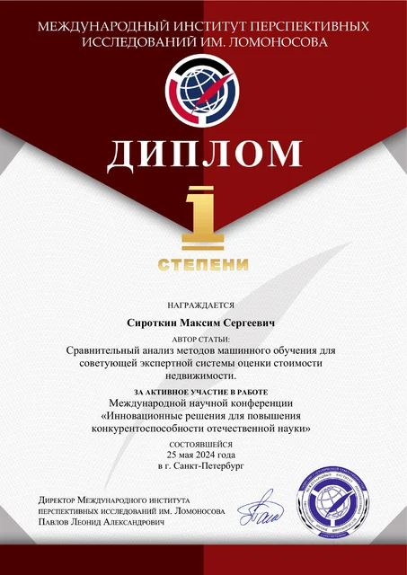
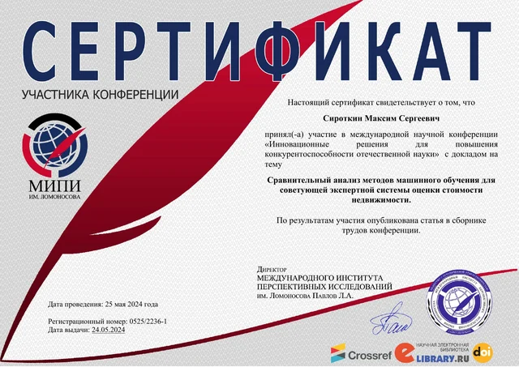
Прикладная математика и информатика
Профиль «Системное программирование и компьютерные технологии»
Прикладная информатика
Профиль «Искусственный интеллект и анализ данных»
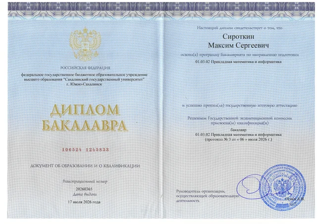
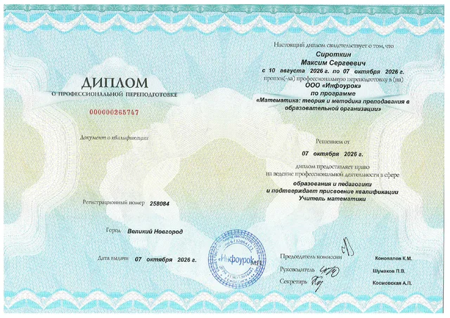